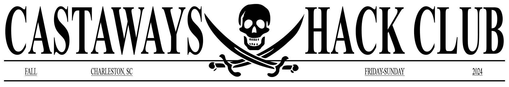
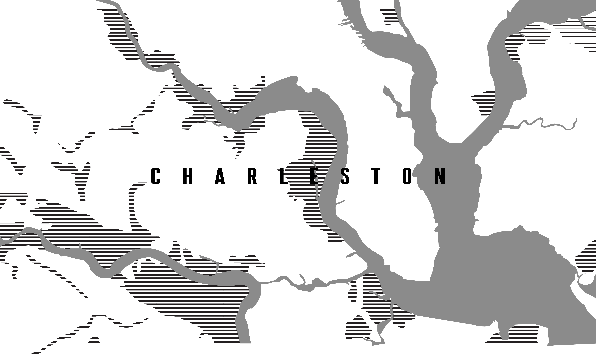

Castaways is an exciting high school hackathon event in the South, organized by a group of local high schoolers passionate about technology and creativity. In collaboration with Hack Club, the largest high school computer science non-profit, we're set to create a truly unique experience. Hack Club is dedicated to empowering students with resources, mentorship, and a supportive community to help them explore their love for tech. The hackathon takes place in the charming city of Charleston, known for its rich history and vibrant culture. With a fun pirate theme, participants will dive into a weekend full of challenges and creativity. Teams will earn "treasure" by completing tasks, which they can use to purchase hardware and other resources to enhance their projects. It's not just a competition; it's an opportunity to collaborate, innovate, and have a great time. Whether you're a coding beginner or a seasoned pro, Castaways offers something for everyone. The event is all about fostering a sense of community, encouraging collaboration, and celebrating the spirit of innovation. Participants will get the chance to showcase their skills, work with like-minded peers, and make lasting memories. Join us for a weekend adventure at Castaways, where tech and imagination set sail together. It's more than just a hackathon; it's a celebration of creativity, learning, and fun!
Am I Eligible?
Our hackathon welcomes all high school students and anyone under the age of 18 who has not yet entered university. If you have a passion for technology and a desire to learn, you're encouraged to participate. For additional questions or specific eligibility concerns, please contact us at SamayUpadhya@gmail.com.
What Is A Hackathon?
A hackathon is a collaborative event where participants, often in teams, work intensively to develop software or hardware solutions. The event typically lasts between 24 to 48 hours, during which teams tackle specific challenges, innovate, and build projects that are presented at the end of the competition.
Are There Safety Procedures?
We prioritize the safety and security of all participants. Our event includes a range of safety measures such as on-site staff and volunteers trained to handle emergencies. We also have protocols to ensure a respectful and secure environment for everyone involved.
What Is The Hack Club Gas Fund?
The Hack Club Gas Fund assists with transportation costs for students attending our hackathons. If travel expenses are a concern, you can apply for support through this fund to help cover your transportation and ensure that financial constraints do not prevent you from participating.
Can I Bring a Team?
Absolutely! Teams are encouraged to participate in the hackathon. You can form a team with friends, classmates, or other participants. If you don’t have a team, you can also join one at the event or work as an individual. Collaboration is a key part of the hackathon experience.
Is Attendance Free?
Yes, attending our hackathon is entirely free. We aim to provide a valuable experience without any financial barriers, making it accessible to high school students everywhere. This includes participants from both local and international locations.
Castaways is an exciting high school hackathon in Charleston SC, featuring a pirate-themed adventure where teams use "treasure" to purchase hardware and resources. The event will be held from [TBD Start Date] to [TBD End Date] at [TBD Venue Address]. This is an overnight hackathon. All meals will be served with options for dietary restrictions, and all participants must sign a waiver. Charleston, known for its rich history and vibrant culture, provides the perfect backdrop for this event. A parent guide is available for those who may have concerns about their child's participation. Join us for a weekend of innovation and fun. Stay tuned for more details and prepare to set sail with Castaways!